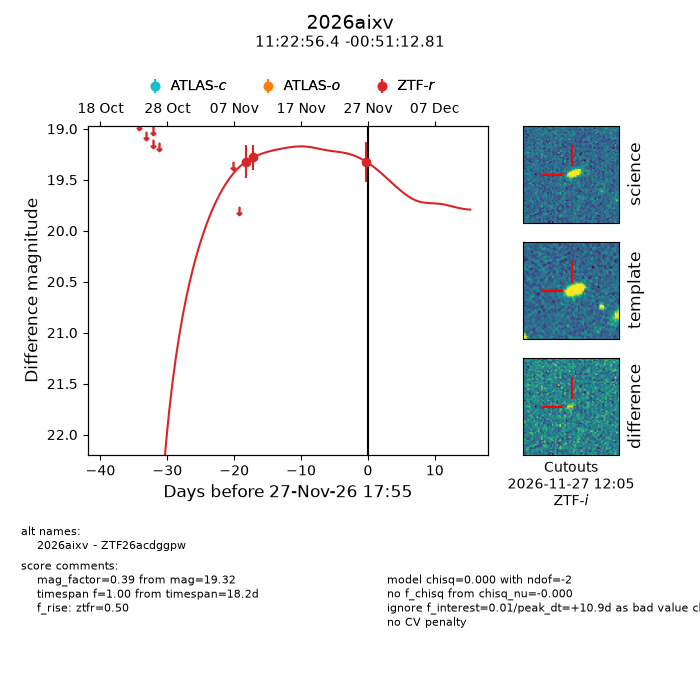
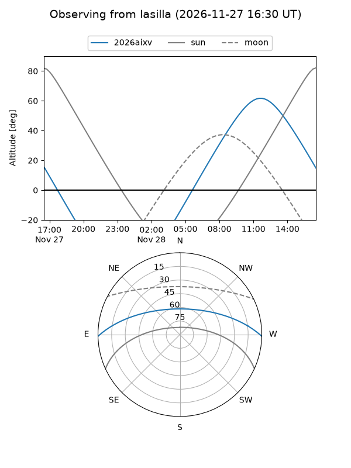
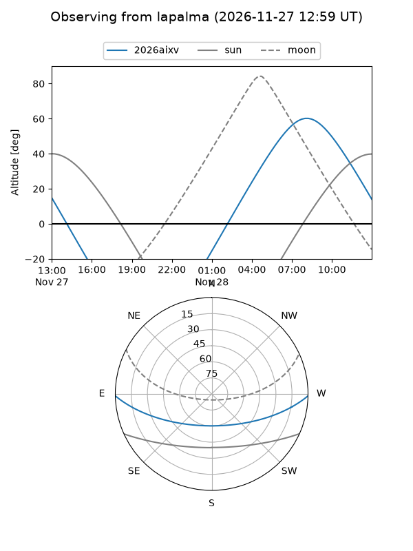
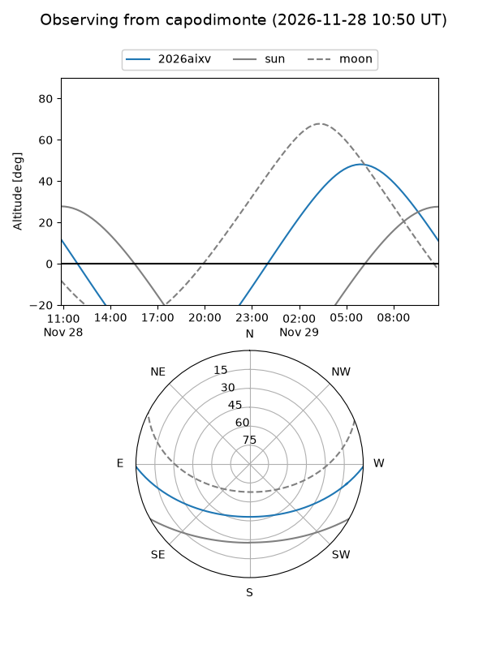
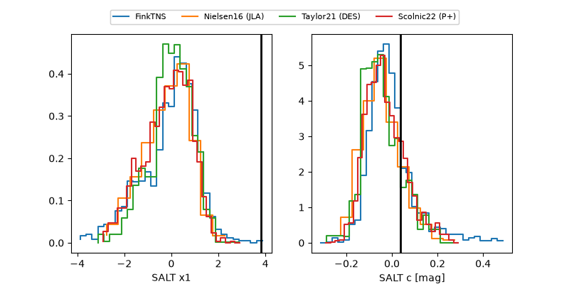

2026aixv
Target 2026aixv at 2026-11-27 17:56
Aliases and brokers:
FINK-ZTF: ztf.fink-portal.org/ZTF26acdggpw
Lasair-ZTF: lasair-ztf.lsst.ac.uk/objects/ZTF26acdggpw
ALeRCE-ZTF: alerce.online/object/ZTF26acdggpw
YSE-PZ: ziggy.ucolick.org/yse/transient_detail/2026aixv
TNS name: wis-tns.org/object/2026aixv
Direct TNS query: direct search
alt names
ZTF26acdggpw (ztf,fink_ztf)
2026aixv (tns,yse)
Coordinates:
equatorial (ra, dec) = 170.7351,-0.85356
equatorial (HMS+DMS) = 11:22:56.43,-00:51:12.81
galactic (l, b) = (262.0898,+54.84257)
Flags:
peak dt: +10.9
Photometry:
last ztfr=19.32
3 ztfr detections
Lightcurve

Visibility



Additional plots
